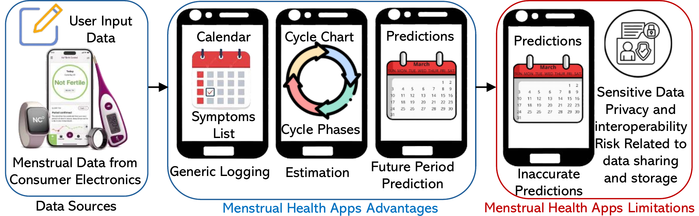
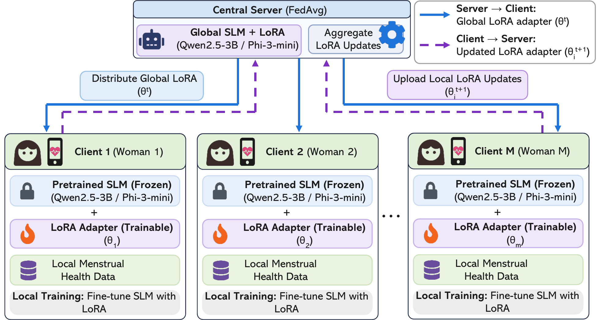
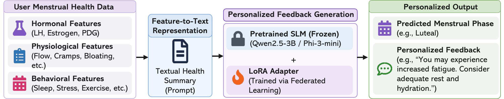
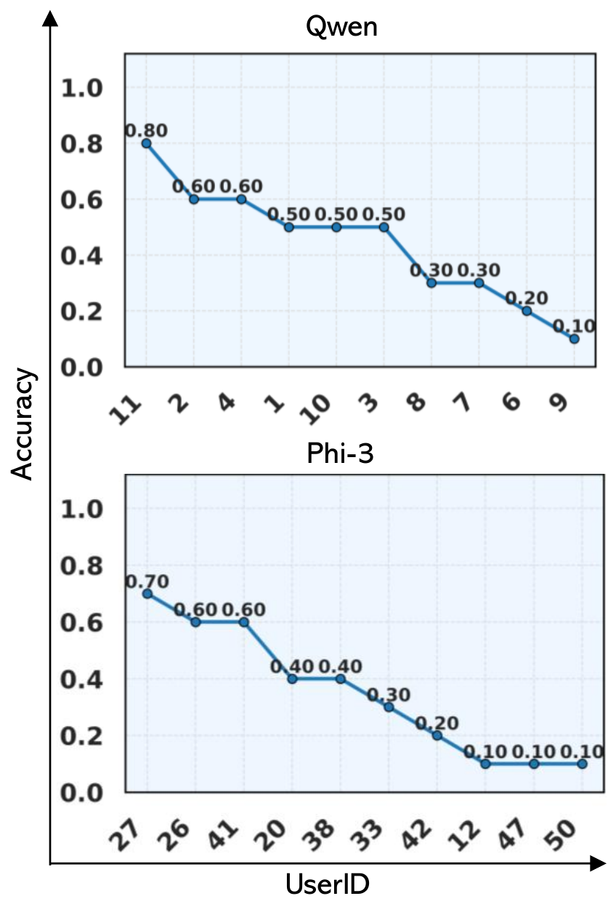
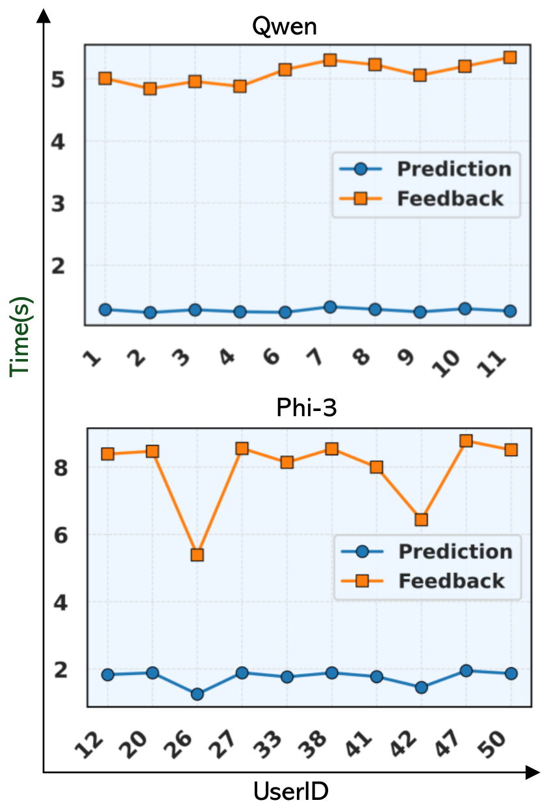
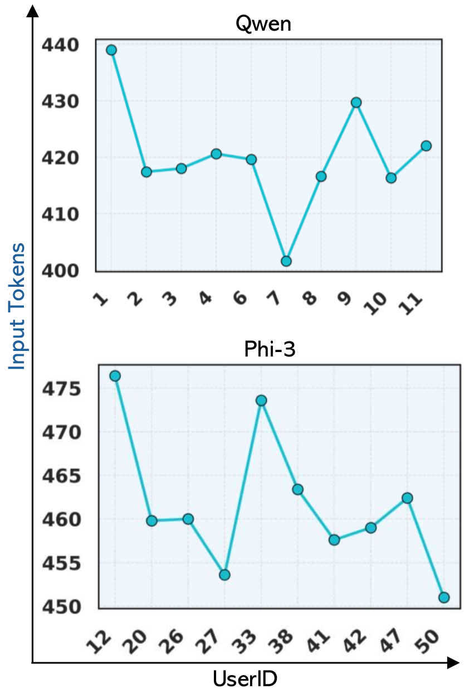
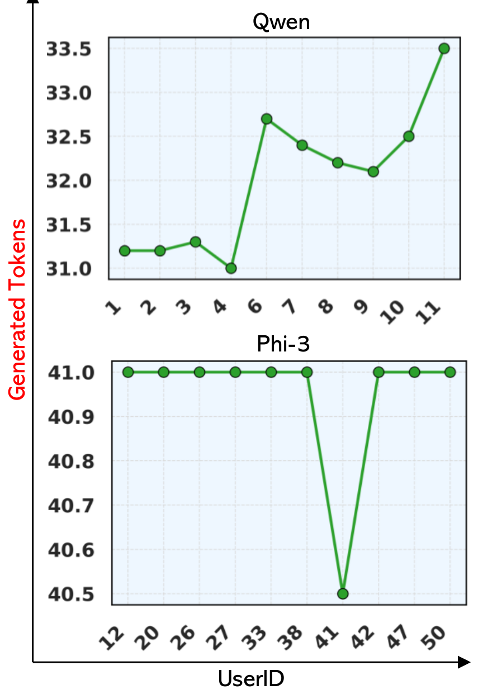

Qwen2.5-3B-Instruct
best accuracy- Accuracy
- 0.8394
- Macro F1
- 0.8179
- Weighted F1
- 0.8349
Prediction ≈ 1–1.3 s · feedback ≈ 4.8–5.4 s per record. Macro F1 sits ~0.017 below weighted F1, suggesting weaker performance on less frequent phases.
Preprint · Under review
Affiliations withheld for review
Wearables and tracking apps collect rich hormonal, physiological and self-reported menstrual-health data, but turning it into understandable, personal insight without centralizing sensitive records is still hard. We fine-tune two small language models with federated LoRA, so each participant's raw records stay local, and the model returns both a phase prediction and short, feature-grounded feedback.
The digitalization of women's health is expanding the collection of hormonal and physiological measurements and self-reported observations through mobile applications, wearable devices, and connected health platforms. However, translating these heterogeneous data into personalized, understandable insights while protecting sensitive records remains a challenge. This paper proposes a federated small language model (SLM) framework for menstrual phase prediction and natural-language feedback generation without centralizing raw health records.
We experiment with Qwen2.5-3B-Instruct and Phi-3-mini-Instruct, two SLMs whose quantized versions have been shown to run on smartphones in prior work. Using the mcPHASES dataset, we convert hormonal, physiological, and self-reported features into structured feature-to-text representations for fine-tuning with low-rank adaptation (LoRA). Each participant is treated as a client, with locally trained LoRA adapters combined through federated averaging while raw records remain local. The framework predicts the menstrual, follicular, fertility, and luteal phases and generates concise feedback based on the supplied features.
The federated Qwen2.5-3B and Phi-3-mini models achieve accuracies of 0.839 and 0.825 and macro F1-scores of 0.818 and 0.803, respectively. Qualitative examples illustrate the generated feedback. On a workstation, phase prediction takes approximately 1–2 s and feedback generation 5–8.5 s. These findings support the potential of federated SLMs for decentralized interpretation of menstrual health measurements and personalized feedback in digital health applications.
Wearables and smartphone platforms already collect complementary evidence of menstrual-health changes. Current apps do three things well: calendar-style logging, cycle-phase estimation, and future-period prediction.
Two things are missing:

Interprets menstrual-health measurements and self-reported observations, treating each participant as a client and keeping raw records local during training.
Hormonal, physiological and self-reported features become structured prompts for phase prediction and personalized natural-language feedback.
Qwen2.5-3B-Instruct and Phi-3-mini-Instruct adapt collaboratively by exchanging lightweight adapter parameters, not full model weights or raw records.
Predictive performance, per-user behaviour, workstation resource usage and qualitative feedback analysis, plus a pathway to smartphone deployment informed by prior on-device work.

Federated averaging of LoRA adapters
θt+1 = Σi ∈ St niΣk ∈ St nk θit+1
St = clients selected in round t, ni = local samples on client i, θit+1 = client i's updated adapter. Clients with more data contribute proportionally more.

Predict the menstrual cycle phase (Menstrual, Follicular, Fertility, or Luteal) and provide concise, personalized feedback based on the user's health features.
Menstrual health summary:
LH: [value], Estrogen: [value], PdG: [value], Flow: [value], Cramps: [value], Fatigue: [value], Bloating: [value], Sleep issues: [value], Mood swings: [value], Stress: [value], Exercise level: [value], and other recorded symptoms.
Phase: [Ground-truth menstrual phase]
Feedback: [Personalized, feature-grounded health explanation]
Figure 4. Prompt tokens are masked during supervised fine-tuning, so the model learns to generate the phase and the feedback — not to copy the prompt.
mcPHASES — menstrual cycle Physiological, Hormonal, and Self-Reported Events and Symptoms — is a multimodal dataset of de-identified records from Canadian young adult menstruators collected over two three-month intervals.
3 numerical hormone measurements (LH, estrogen, PdG) and 14 categorical features on menstrual flow, physical symptoms and lifestyle. Every record has at least one missing value, most often in PdG, flow volume and flow color. For the statistical tests only, hormones are imputed with phase-wise medians and missing categoricals set to not_reported; this label-dependent imputation is not used for model training.
Dataset access requires PhysioNet registration and agreement to its data-use terms; the data are not redistributed here.
Kruskal–Wallis (numerical) and χ² (categorical) tests, grouped by type · bar length = −log10(p), log scale
| Feature | Type | p-value | Significant |
|---|
14 of 17 features are significantly associated with phase at α = 0.05 (no correction for multiple comparisons); appetite, exercise level and stress are not. Bars reaching the edge are below floating-point precision (p < 10−300, reported as 0 by the test).
Subject-level split with 10 training, 2 validation and 3 test clients. All experiments ran on a workstation with 90 GB of RAM. Macro F1 weights the four phases equally; weighted F1 weights them by frequency.
Prediction ≈ 1–1.3 s · feedback ≈ 4.8–5.4 s per record. Macro F1 sits ~0.017 below weighted F1, suggesting weaker performance on less frequent phases.
Prediction ≈ 1.5–2 s · feedback ≈ 5.5–8.5 s per record. Output length is nearly constant at ~41 tokens.
| Metric | Qwen2.5-3B | Phi-3-mini |
|---|---|---|
| CPU usage (%) | 97.9 ± 1.3 | 95.1 ± 1.8 |
| Process RAM (GB) | 1.56 ± 0.05 | 1.46 ± 0.00 |
| RAM increase (MB) | 5.3 ± 64.3 | 6.7 ± 66.6 |
| System RAM (%) | 65.8 ± 0.5 | 71.5 ± 6.6 |
Table 2 of the paper. The average RAM increase during inference is small, though its large standard deviation shows run-to-run fluctuation. Smartphone or wearable deployment would need further compression such as quantization.
Top row of each figure: Qwen2.5-3B (test users 1–11). Bottom row: Phi-3-mini (test users 12–50). The two models were evaluated on different users, so their per-user results shouldn't be compared directly.




Takeaway. Both federated SLMs reach accuracy above 0.82 and macro F1 above 0.80, with Qwen2.5-3B slightly ahead. Large differences between users point to a need for personalization strategies. Workstation latency (about 1–2 s for the phase, 5–8.5 s for feedback) suits non-interactive use such as daily summaries; real-time use on smartphones would need further optimization.
Representative correctly classified test records and the feedback generated in the federated setting (Table 3). Most feedback is consistent with the predicted phase, but some responses are imprecise (flagged below) and they follow a small number of recurring templates — which motivates the systematic feedback evaluation planned as future work.
This study runs on workstation hardware; smartphone deployment is outside its scope. Prior work does show that both model families can run inference on phones.
Qwen2.5-3B · quantized
≈ 2.4GiB
Total memory on a OnePlus 12 Android phone with a 4,096-token context budget (Hao et al.).
Phi-3-mini · 4-bit
> 12tok/s
Fully offline on an iPhone with an A16 Bionic chip, using about 1.8 GB of memory (Phi-3 technical report).
Phi-3-mini-Instruct · 4-bit
iPhone 12 Pro+ others
Evaluated on multiple iPhones with an MLX-based inference app (Nissen et al.).
Still to validate: accuracy, latency, memory and thermal behaviour of the adapted models after quantization on real phones. The cited demonstrations establish on-device inference, not on-device federated fine-tuning.
This is research software. Generated feedback is not medical advice and is not a substitute for a clinician.
@article{fedslm_womenshealth_2026,
title = {Federated small language models for personalized and
interpretable women's health support},
author = {Anonymous},
journal = {Preprint, under review},
year = {2026}
}Please also cite the mcPHASES dataset: Lin, B., Li, J. Y., Kalani, K., Truong, K., & Mariakakis, A. (2025). mcPHASES: A Dataset of Physiological, Hormonal, and Self-reported Events and Symptoms for Menstrual Health Tracking with Wearables (v1.0.0). PhysioNet. doi:10.13026/zx6a-2c81